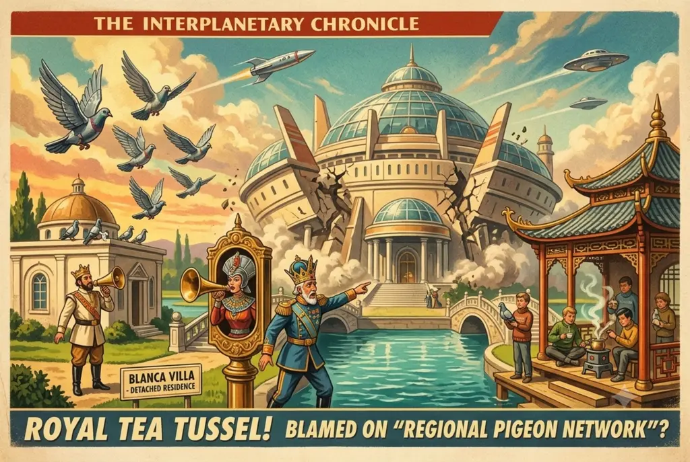

Monarchs in Meltdown as Tea House Squatters Threaten Inter-Palace Border Controls

ROYAL COMMUNIQUÉ CONFIRMS MONARCHS CONSIDER INTERNAL BORDER CONTROLS AFTER TEA HOUSE OCCUPIED BY LOCAL YOUTH
By Amthonie Vandenberg, Senior Interplanetary Correspondent
MERCURIA — The grand vision of the Mercurian Royal Union—a consolidated, cost‑effective super‑palace housing a couple of dozen ruling sovereigns under a single, heavily insulated roof—faces imminent structural collapse today following what officials are describing as an “unprovoked assault on sovereign hospitality.”
Conceived as a triumph of fiscal prudence, the palace allowed a select contingent of Mercuria’s crowned heads to share kitchen staff, rationalise moat maintenance, and pop in on one another for informal bilateral talks without the inconvenience of personal carriage travel. However, the delicate diplomatic equilibrium collapsed entirely on Tuesday morning when King Ibero discovered that his ornate summer tea house, situated just across the central moat, had been occupied by a small group of unemployed local youths brewing improvised herbal infusions on the veranda.
The response from his fellow sovereigns was swift and entirely unencumbered by empathy. A hastily convened emergency corridor committee immediately threatened to lock King Ibero out of the shared internal passageways, effectively revoking his access to the communal banqueting hall and the breakfast buffet.
Instead of offering assistance, the remaining monarchs united in uncompromising condemnation—not of the intruders, but of Ibero himself.
“We entered this union under the explicit understanding that everyone would maintain a basic standard of boundary control,” declared Queen Vatlena through an ornate brass intercom. “If we allow squatters in the West Wing tea parlor today, by Thursday they will be sharing our gravy boats. It is an untenable breach of residential etiquette.”
King Ibero has naturally deflected all responsibility, placing the blame squarely on King Blanca, who resides outside the collective complex in a detached stucco villa. King Blanca, speaking through a gold‑plated megaphone from his front lawn, rejected the accusation entirely, attributing the breach to the regional pigeon network, which he claims enables the lower classes to coordinate subversive tea‑drinking activities with unprecedented efficiency. The pigeon service, long considered a cultural treasure despite its chronic unreliability, has been accused before of facilitating “unsanctioned gatherings.”
Amid the deafening chorus of diplomatic posturing, mutual sanctions, and accusations of treason, none of the assembled heads of state have bothered to check the tea house itself. Had any sovereign dispatched a page to inspect the premises, they would have discovered that the trespassers quietly departed two hours ago, having found the drafty pavilion entirely unsuitable for a proper afternoon nap.